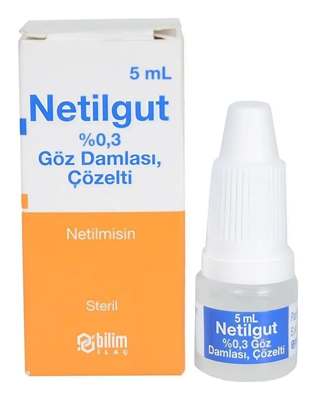

Netilgut % 0,3 Göz Damlası, Çözelti, 5 ml

Ne için kullanılır
KT · Bölüm 1NETİLGUT, beyaz polipropilen kapak ve rondela ile ambalajlanmış, kendinden damlalıklı, yarı-şeffaf, LDPE şişede 5 mL göz damlası çözeltisi ve kullanma talimatı ile birlikte sunulmaktadır. Renksiz veya hafif sarımsı renkli berrak çözeltidir.
NETİLGUT, göz ve eklentilerinde netilmisine hassas patojenlerin neden olduğu dış enfeksiyonların lokal tedavisinde kullanılır.